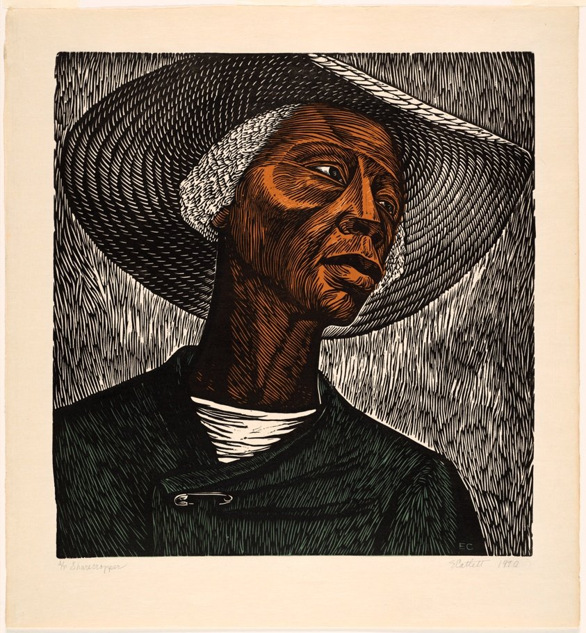

Sharecropper
Elizabeth Catlett · 1952, printed 1970 · Color linocut on cream Japanese paper · 45 × 43.1 cm (image) · Art Institute of Chicago
In copyright. Look and learn: shown for study, not for download.
Catlett cut this block in Mexico, where she had moved in 1946 to work at the Taller de Gráfica Popular, a print workshop. The earlier printings were black and white. This impression was printed from the original linoleum block in 1970, and for it she added color. She worked with the workshop for twenty years.